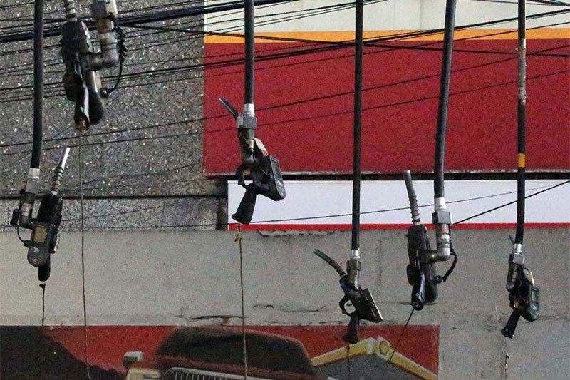

Tape
DOE via Philstar (Sep 14, effective 6am Tue 15): diesel +₱4.31/L, gasoline +₱5.68, kerosene +₱4.62 — second week of big lifts (two-week stack: diesel +₱9.49, gasoline +₱10.37). Some Metro Manila pumps already past ₱100/L; DOE cites Middle East tensions; transport groups struck Mon–Tue; LPG marketers asked Energy Sec. Garin to suspend petroleum excise temporarily. Insider PH / Philstar (Sep 14–15): URC Sustainable Potato Program — 54 MT Granola seed to 216 Benguet/Mountain Province farmers (Apr plant, late-Aug harvest); trial plots of 7 other varieties; 8-year tally >600 MT seed / >₱40M to 1,000+ farmers across CAR, Bukidnon, Davao → ~34,000 MT / ~₱1.36B farmgate; farmers ~₱300k avg annual income; GBF scholarships for 18 farmers’ kids. Insider PH (Sep 14): BCDA + Ayala Land–led SSECC extend Market! Market! lease 12y7m (Jun 5, 2027–Dec 31, 2039) with ₱1B modernization; site will host Metro Manila Subway’s BGC station. Philstar (Sep 15): Century Properties opens show village for ₱5.6B Cerulean Residences — 25 ha / 1,100 homes in Gen. Trias, Cavite, near new CALAX Governor’s Drive exit; premium vs PHirst affordable split.
For Calamba: diesel’s two-week nearly-₱10 climb hits delivery, cold chain, and staff commute before it hits the menu — reprice logistics lines this week, don’t wait for the next DOE print. URC is locking highland potato seed + offtake for snacks; if you buy fries/chips/starch sides, watch farmgate and contract growers the same way JFC watches chicken. Catchment: Gen. Trias premium housing off CALAX is south-corridor money parking near industrial parks — lunch and dinner demand follows residences 12–24 months after show villages fill. BGC’s Market! Market! subway bet is the transit-anchored retail thesis at metro scale; for Laguna openers, map which CALAX exits will get the same “gateway + food court” pressure.

Diesel +₱4.31/L — second week past ₱100 pumps
15 Sep 2026
DOE via Philstar: another round of pump hikes took effect 6am Tuesday — diesel up ₱4.31 per liter, gasoline ₱5.68, kerosene ₱4.62. Stacked on last week’s lifts (gasoline +₱4.69, diesel +₱5.18, kerosene +₱5.58), that is roughly ₱10.37 / ₱9.49 / ₱10.20 over two weeks. Some Metro Manila gasoline and diesel grades were already clearing ₱100/L depending on station. DOE again pointed to Middle East tensions. Transport groups ran a two-day strike Mon–Tue; LPG marketers wrote Energy Secretary Sharon Garin asking for a temporary excise suspension on LPG and other petroleum. COO read: this is logistics and labor commute cost before it is food inflation. Reprice third-party delivery and supplier freight this week; if your ticket still “absorbs” diesel, you are donating margin. Excise-suspension talk is political — don’t budget on it.
Open Philstar
URC potato program: seed, offtake, and ₱1.36B farmgate
14 Sep 2026
Insider PH / Philstar: Universal Robina’s Sustainable Potato Program just closed another cycle — 54 metric tons of Granola seed distributed April 25 to 216 members of the United Potato Producers of Benguet and Mountain Province, planted early May, harvested late August. Farmers keep part as next-cycle seed and sell the rest. Trial plots add seven varieties (Hilite Russet, Russet Burbank, Eva, Mystere, Kennebec, Red Norland, Satina) beside Granola. Eight-year scoreboard: more than 600 MT of seed worth over ₱40 million to 1,000+ farmers across Cordillera, Bukidnon, and Davao; about 34,000 MT produced at ~₱1.36 billion farmgate; participating farmers averaging ~₱300,000 annual income; first five years credited with ~4% lift in national potato output. Gokongwei Brothers Foundation scholarships cover 18 farmers’ children (mostly Benguet State). [FLAG: company anniversary / CSR framing around URC’s 70th.] Operator take: this is not charity theater — it is a snack manufacturer securing starch reliability. If fries, chips, or potato sides sit on your menu, ask who owns your seed-to-freezer chain. Contract or dual-source before the next typhoon window; URC already did.
Open Insider PH · Open Philstar
Century plants premium homes in Gen. Trias off CALAX
15 Sep 2026
Philstar: Century Properties Group opened the show village for Cerulean Residences — a ₱5.6-billion, 25-hectare, 1,100-home premium project in General Trias, Cavite, near the new Cavite-Laguna Expressway (CALAX) exit on Governor’s Drive. Managing director Carlo Antonio framed it as a deeper Southern Tagalog push on the back of the region’s infrastructure blitz; access improves further when CALAX ties to CAVITEX via Kawit. The site sits near Gateway Business Park and New Cavite Industrial City. Cerulean is the premium balance to CPG’s PHirst affordable brand — modern horizontal “resort-style” homes with gates, two-car garages, EV charger provisions. Opener/COO take for Calamba: Gen. Trias + CALAX + industrial parks is the south catchment thesis in one PSE disclosure. Show villages today mean lunch and dinner demand 12–24 months out. Map Governor’s Drive exits and the Calamba–Cavite corridor for mid-ticket casual before mall landlords price the same traffic. Don’t wait for an SM/Ayala box to announce — residential absorption is your leading indicator.
Open Philstar